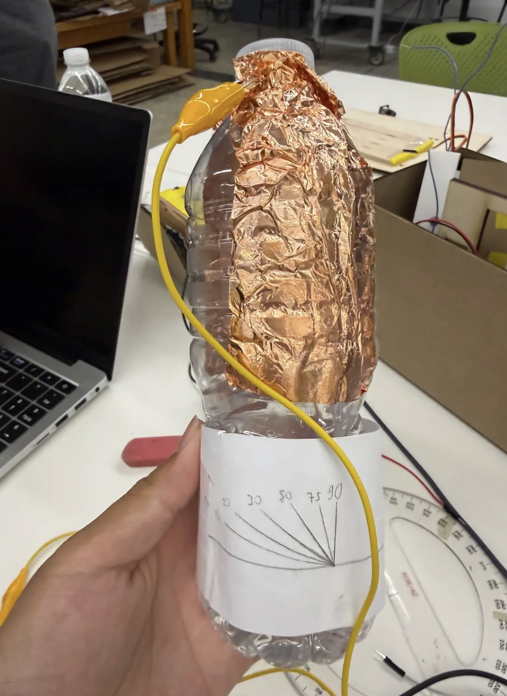
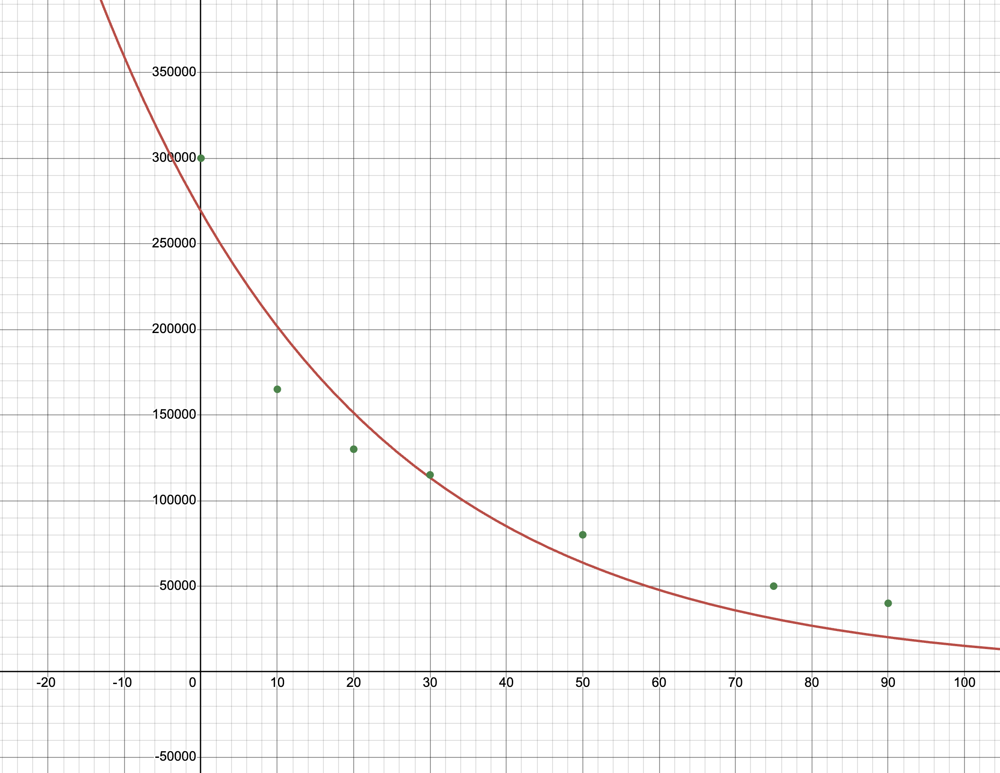
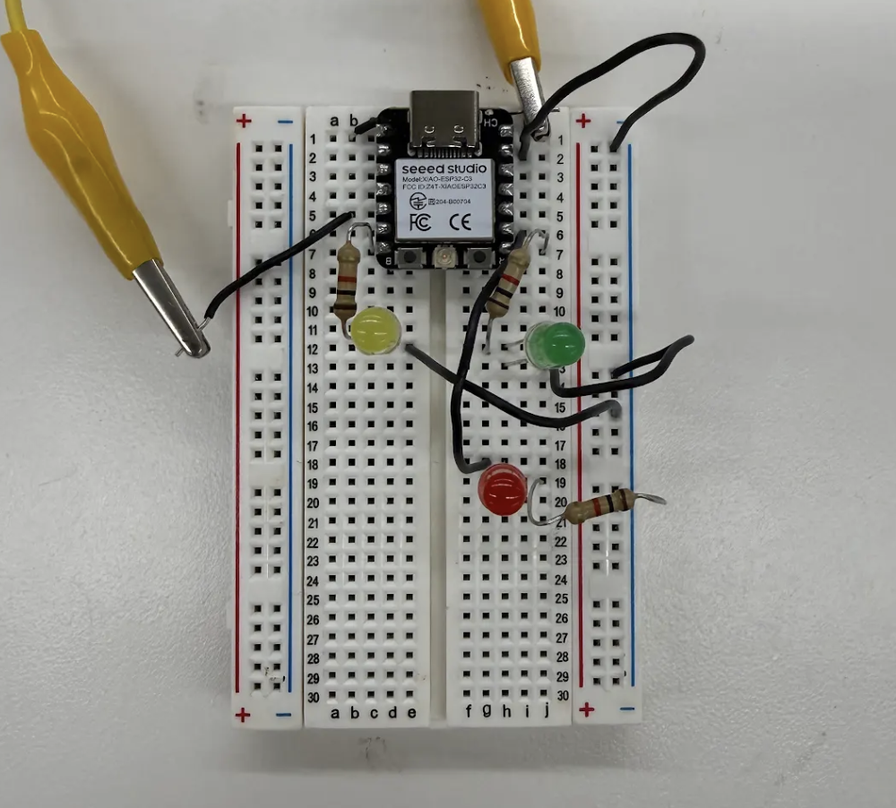
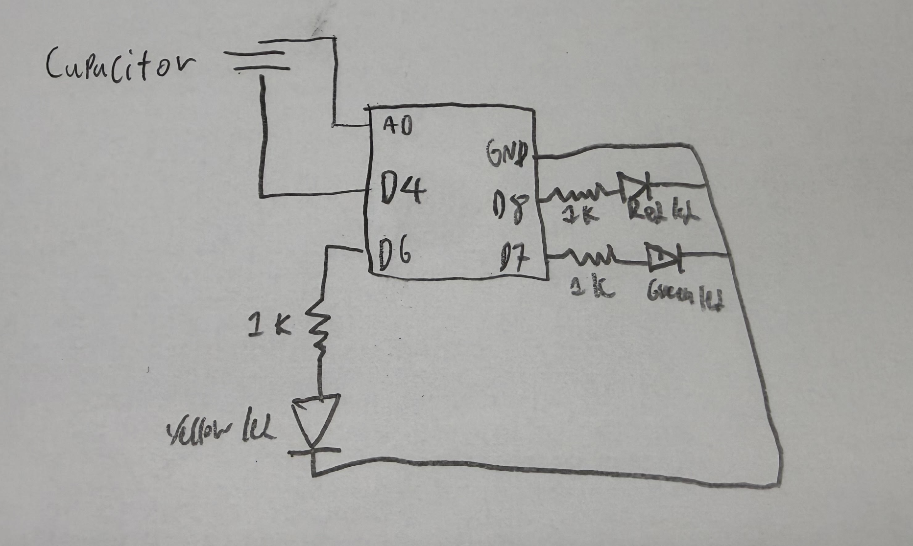
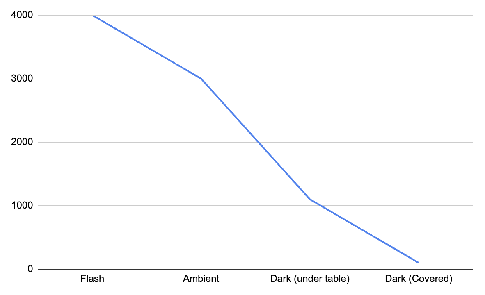

You have two assignments: create and calibrate a capacitive sensor and then use and calibrate another sensor.

water bottle tilt sensor
I created a capacitive sensor that could track tilt. I did this by using a half filled water bottle and attaching two pieces of copper tape opposite each other on the water bottle. I also taped a paper with the angles that I want to use to calibrate the tilt sensor. The device works as water and air have a different capacitance, so the higher the tilt more water will be between the copper plates and water has a higher capactiance than air so the readings would be higher the more tilt there is.

calibration graph
I calibrated the sensor by using the paper and a ruler stuck upright on a table to accruately document down the angle and the matching capacitance. The graph above is the result of my calibration that results in an exponential regression line of best fit. My hypothesis of why this happens is because the higher the tilt the more water is brought between the copper tape, as the increase in water is not linear the capactiance should not be linear either.


water bottle tilt circuit&schematic
This is the circuit that the tilt sensor is connected to through the aligator clips at D4 and A0. The circuit works by reading the capcitance through the water bottle and lights an led based on the capcitance.
The code works by reading the capactiance that is measured by sending voltage through D4 and reading the response using A0 and turning on red led if the response is greater than 300,000, turning on the led if the response is greater than 70,000 but still less than 300,000, and turning on the green led if the response is less than 70,000.
water bottle tilt sensor in action
For the second part of the assignment I was tasked with doing something similar to the water bottle tilt sensor but using another input device, I chose to use the phototransistor. The phototransistor works by decreasing or increasing the resistance based on the light it detects.

calibration graph
I calibrated the photoresistor by measuring the response at different lights, when I shone a flashlight onto the photoresistor it read over 4000, in ambient light it was around 3000, under a table it was around 1100, and finally when I covered the photoresistor with my hand it read around 100.